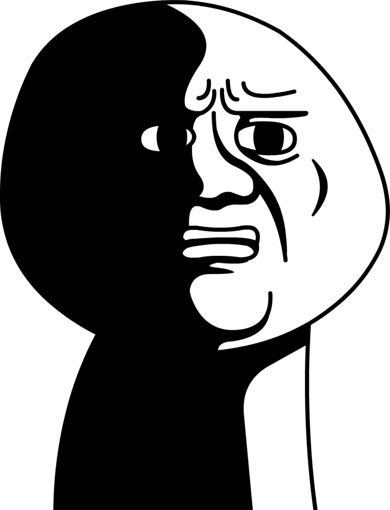

На этом все


|
| MishinMusishin |
| Это почти полностью готовый сайт с музыкой, на котором вы сможете найти любую песню. Хоть он еще и не окончен, но вы уже можете им пользоваться так как я проработал все для удобства пользователей |
| Лучшие Right Version песени |
| Это еще один мой сайт с музыкой, но он сделан исключительно для фанатов гачимучи. НЕ советую заходить если не знаете что это такое. На сайте собраны поистене лучшие Right Version песен |
| Кто ты в качалке? |
| Это сайт я создал самым первым, так что не критикуйте сильно. Сайт представляет из себя просто список уровня качалки, перейдя по которым вы сможете понят как вы выглядите.НЕ советую заходить если не знаете что такое гачимучи. Сайт, пока что, очень сырой, но я, в скором времени, собираюсь его обновить |
На этом все |
|
Большего от меня ожидать не стояло, я вам не сверх разум |
| Ах да забыл | |
| Мое лицо когда я получил 5 за этот сайт | Мое лицо когда я получил 2 за этот сайт |
|  |